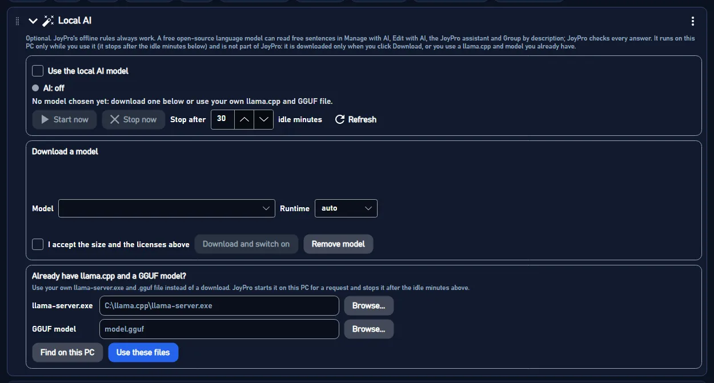

#Projektisivu
PainikekirjoitettuTyökaluvihje Avaa osan virallisen julkaisusivun selaimessasi
Komponenttikortissa: avaa komponentin virallisen julkaisusivun selaimessasi; siellä sen oma projekti kuvaa sen ja tarjoaa sen lataukset.
Asetukset-sivulla ovat kaikki JoyPron asetukset 25 osiossa, jotka avautuvat ja sulkeutuvat. Hakukenttä löytää asetuksen sanalla (”ilmaisinalue”, ”päivitys”, ”valokuvat”), ylhäällä olevat välilehdet hyppäävät osioon, ja voit järjestää osiot omaan järjestykseesi. Jokainen asetus tallentuu heti ja säilyy uudelleenkäynnistyksen yli; Tallenna-painiketta ei ole.


Ensimmäinen käynnistys avaa vain Pelit-osion; kaikki muu on yhden napsautuksen päässä. Useimmat tarvitsevat vain osiot Pelit, Ulkoasu, Kieli ja JoyProsta ja päivityksistä.
| Osio | Mitä siellä asetetaan |
|---|---|
| Pelit | Mitkä pelit sinulla on, linkitetyt kansiot, pelien asetusten seuranta, JoyPron käyttämä vJoy-laite |
| Määritykset | Seuraa syötettä, painettuna lepäävien painikkeiden tallennus |
| Esittelyt | Tervetulonäkymä, ohjetila (F1) ja kaikki esittelyt uudelleen aloitettaviksi |
| Käynnistys | Avaa viimeisin profiili käynnistyksessä |
| Alapalkin sivut | Piilota sivuja, muuta niiden järjestystä |
| Kieli | JoyPron kieli |
| Ulkoasu | Vaalea, tumma tai omat värisi, tekstin koko, käyttöliittymän koko, teemaeditori |
| Suorita taustalla | Ilmaisinalueen apuohjelma, joka seuraa pelejäsi |
| Vahvistukset | Kysymykset, jotka JoyPro esittää ennen muutosta |
| JoyProsta ja päivityksistä | Versio, projektisivu, päivitykset |
| Tietosuoja | Valmistajien valokuvat, kuvapaketit, pelien kansikuvat |
| Käyttötilastot | Tilastot-sivu, eniten käyttämiesi ilma-alusten sijoitus |
| Telemetrian tallennus | Tallenna lentosi kuten Tacview |
| Piirrokset | Miten JoyPro piirtää laitteesi; palauta asettelumuutoksesi |
| Ilmoita ongelmasta | Yksi zip, jossa on kaikki ongelman löytämiseen tarvittava |
| Paikallinen tekoäly | Valinnainen kielimalli |
| Osat | vJoy, HidHide, ViGEmBus ja muut valinnaiset ohjelmat |
| Laitteet | Laitteesi, niiden nimet, laitteen korvaaminen tai poistaminen |
| Komentoluettelot (DB) ja pelien polut | Tietoa asiantuntijoille |
| DCS: oletusmääritykset | DCS:n omat oletusnäppäinmääritykset DCS-asennuksessa |
| DCS:n, Star Citizenin ja IL-2:n komentoluettelot | Komentoluetteloiden päivitykset asiantuntijoille |
| Pelien voimapalauteasetukset | Pelien omat voimapalauteasetukset |
| DCS-voimapalaute: vaihto ja kääntö | DCS:n voimapalautteen suunta laitekohtaisesti |


Yksi kortti kutakin peliä kohden, jota JoyPro tukee ja joka sinulla on: kansikuva, ”Asennettu” tai ”Ei asennettu”, missä se on ja missä se säilyttää ohjausasetuksensa.
gui.vromfs.bin ja lang.vromfs.bin vain lukien saadakseen jokaisen lentokone- ja helikopteritoiminnon. Pois: vain JoyPron oma luettelo War Thunderin toiminnoista, jotka se tuntee.Täällä mikään ei muutu pelissä. Linkitetty kansio määrää, mistä tuonti lukee ja mihin vienti kirjoittaa; piilotettu peli ei saa vientikorttia eikä sitä seurata.


Vastauksesi ohjatun määrityksen kysymykseen Käytätkö pään seurantaa tai VR:ää? Pään seurannalla (TrackIR, kasvojenseurantaa käyttävä verkkokamera, Tobii-silmänseurain) tai VR:llä katsot ympärillesi kääntämällä päätä.
Kaikki JoyPron esittelyt yhdessä paikassa (Ohjetila ja esittelyt):


Avaa viimeisin profiili käynnistyksessä (oletuksena päällä) avaa profiilin, joka sinulla oli viimeksi auki; polku näytetään alla. Huomautus selittää profiilin historian: jokainen muutos tallentuu itsestään ja jokainen tallennus on versio Historia-kohdassa (yläpalkki). Vanhoja versioita harvennetaan: kaikki viimeiseltä vuorokaudelta, sitten yksi tunnissa 7 päivän ajan, yksi päivässä 60 päivän ajan ja sen jälkeen yksi viikossa; enintään 200 Mt profiilia kohden ja 1 Gt yhteensä. Säilytettäviksi merkitsemäsi versiot jäävät.


Yksi rivi kutakin alapalkin sivua kohden. Poista rasti sivulta, jota et käytä; vedä riviä sen kahvasta (tai käytä nuolia) muuttaaksesi järjestystä. Piilotettu sivu avautuu yhä muilta sivuilta (esimerkiksi Avaa Muuntimet-sivu) ja näkyy palkissa, kun se on auki. Asetuksia ei voi piilottaa. Palauta oletus palauttaa JoyPron järjestyksen ja näyttää kaikki sivut.


JoyPron kieli: englanti ja 38 muuta kieltä tai Windowsin kieli (Windowsin näyttökieli tai englanti, jos JoyProssa ei ole sitä). Käännökset on tehty koneellisesti ja voivat kuulostaa oudoilta; pelien komentonimet pysyvät sellaisina kuin peli ne nimeää. Ilmaisinalueen apuohjelman valikko seuraa kieltä.


JoyPro voi huomata pelin ohjausasetusten muutokset vain ollessaan käynnissä. Pieni apuohjelma jatkaa seurantaa kuvakkeena ilmaisinalueella, kun olet sulkenut JoyPron; se ei käytä huomattavasti suoritinta ja vain muutaman Mt muistia.


JoyPro kysyy ennen muutosta, jota on vaikea perua. Kysymykset, jotka voit kytkeä pois, on lueteltu tässä: toiminnon poistaminen suhteesta, tuonti, joka hylkää muutokset, joita et ole vielä vienyt, ensimmäinen vienti peliin, josta profiiliin ei ole koskaan tuotu, vienti, joka poistaa näppäinmäärityksiä, ja tuonnin seurantavihje. Kysymys, jonka kytkit pois valinnalla ”Älä kysy uudelleen”, näkyy tässä rastittomana; Kysy kaikki uudelleen kytkee ne kaikki takaisin päälle.


Versio, koontiversio ja lisenssirivi, Projektisivu ja Julkaisusivu, kolmansien osapuolten ilmoitukset sekä päivitykset: Tarkista päivitykset, Asenna päivitys (lataa uuden version, tarkistaa sen, asentaa sen ja käynnistää JoyPron uudelleen), Tarkista päivitykset käynnistyksessä ja Tarjoa uudelleen ohittamallesi versiolle. ”Mistä päivitykset tulevat (kokeneille)” nimeää GitHub-repositorion, jonka julkaisuja JoyPro asentaa.


JoyProssa ei ole tiliä eikä telemetriaa. Se menee verkkoon vain päivitystarkistuksia, valmistajien tuotekuvia (kun olet sanonut kyllä), tältä tietokoneelta puuttuvia pelien kansikuvia, valinnaisen tekoälymallin latausta, valinnaisia ajureita ja puuttuvaa .NET Frameworkia varten.


JoyPro kirjaa, mitä pelejä, ilma-aluksia ja aluksia käytät, pelien omista lokeista ja Steamin peliajasta, ja säilyttää yhteenvedon tällä tietokoneella.


Tallentaa jokaisen kierroksen, tehtävän tai lennon kaikkine telemetrioineen, jotka peli lähettää (sijainti, asento, nopeudet, ohjaimet, moottorit, aseet, tapahtumat), kuten Tacview tekee DCS:lle, jokaisesta pelistä, jonka telemetriaa JoyPro lukee.


Miten JoyPro piirtää laitteesi Asettelu-sivulla ja laitekorteissa (viivat tai cel-varjostus, JoyPron värit tai omasi), erikseen näytölle sekä pikaohjeille ja vienneille. Palauta kaikki asettelumuutokseni... palauttaa jokaisen laitteen kuvan JoyPron oletukseen (merkkien sijaintisi, taulukot ja viivat, uudelleen nimetyt osat, valokuvat, omat laitemäärittelyt ja profiilin käyttämät asettelutiedostot; itse tiedostot säilyvät); heti perään painettu Kumoa palautus tuo ne takaisin. Vain yksi laite: Asettelu-sivulla sen Malli...-valikko. Piirtoasetukset selitetään sivulla Asettelu.


Säilytä taustalokit n päivää (oletus 30; yhteensä enintään 200 Mt) ja Avaa lokikansio ovat alla.


Valinnainen. JoyPron offline-säännöt toimivat aina; ilmainen avoimen lähdekoodin kielimalli voi lisäksi lukea vapaita lauseita toiminnoissa Hallitse tekoälyllä, Muokkaa tekoälyllä, JoyPro-avustaja ja Ryhmittele kuvauksen mukaan, ja JoyPro tarkistaa jokaisen vastauksen. Se toimii tällä tietokoneella vain silloin, kun käytät sitä.
llama-server.exe ja .gguf, Etsi tästä tietokoneesta, Käytä näitä tiedostoja, Lopeta niiden käyttö.


Etsi uudelleen näyttää kortin jokaisesta liitetystä ohjainsauvasta, kaasuvivusta ja polkimista sekä jokaisesta laitteesta, jota profiilisi käyttää: sen kuva (napsauta avataksesi laitteen Asettelu-sivulla), nimi, onko se liitettynä ja kuinka monta näppäinmääritystä sillä on.


Vain lukevia vastauksia Tuloste-paneelissa siitä, mitä JoyPro tietää kustakin pelistä: DB:n yhteenveto, DB:n tarkistus, DB-luettelo, DB-pelit, DB-ilma-alukset, DB:n sormenjälki, Pelien polut, Peliluettelo, Pelien tunnistus, suodattimet pelille ja ilma-alukselle. Kun haluat lukea pelin uudet komennot päivityksen jälkeen, käytä Alku-sivulla pelin kortin Päivitä-painiketta.


DCS asettaa omat oletusmäärityksensä jokaiseen laitteeseen. JoyPron DCS-vienti poistaa ne jo jokaisesta laitteesta, johon se kirjoittaa, jokaisessa ilma-aluksessa. Tämän kohdan kaksi valintaa muuttavat itse DCS-asennusta, kaikille laitteille; molemmat ovat pois päältä, ellet kytke niitä päälle.
<file>.nocombo.bak. Säilytä UI-tason oletusmääritykset (valikot, VR) jättää UI-tason ennalleen.Nämä valinnat muuttavat DCS:n omia tiedostoja. Jotkin moninpelipalvelimet eivät päästä sisään, kun ne ovat päällä; Palauta DCS-tiedostot palauttaa DCS:n tiedostot. DCS-päivitys tai -korjaus tuo alkuperäiset tiedostot takaisin; JoyPro kytkee valinnan uudelleen päälle seuraavassa käynnistyksessään.


Tavallisesti pelin luettelo rakennetaan Alku-sivulla sen kortin Päivitä-painikkeella. Täällä: vain jotkin DCS-ilma-alukset, testiajo kirjoittamatta ja vanha napsautustila.


Jokainen pelin tarjoama voimapalauteasetus (voimakkuus, efektit, laitekohtaisesti ja DCS:ssä ilma-aluskohtaisesti). JoyPro tallentaa asettamasi arvot profiiliin ja kirjoittaa ne peliin viennissä; asetukset, joita et tallenna, pysyvät sellaisina kuin ne ovat pelissä. Valitse Peli, Laite ja Ilma-alukset (Kaikki ilma-alukset tai yksi ilma-alus, jonka arvot voittavat), muuta arvoja ja paina sitten Käytä. Palauta hylkää käyttämättömät muutokset, rivin Poista asetus lopettaa yhden asetuksen tallentamisen, Tyhjennä poistaa kaikki näytetyt tallennetut asetukset. JoyPron oma telemetriavoimapalaute on Voimapalaute-sivulla.


Jos voimapalauteohjainsauvasi työntää DCS:ssä väärään suuntaan: rastita sille Vaihda akseli, Käännä X tai Käännä Y ja paina sitten Käytä. Tyhjennä palauttaa laitteelle DCS:n oletukset. Laitetaulukko suodattimineen (Vain yhdistetyt, Vain profiilin), valintapainikkeet ja Käytä valittuja / Tyhjennä valitut / Tyhjennä kaikki; ”Manuaalinen yhden laitteen (lisäasetukset)” asettaa yhden laitteen nimen perusteella.
DCS lukee voimapalautteen suunnan laitekohtaisesti käynnistyksessä: vaihdettu tai käännetty laite työntää toiseen suuntaan jokaisessa ilma-aluksessa.
%APPDATA%\JoyPro2\ui-settings.json (ikkuna, sivut, avoimet osiot ja niiden järjestys, teema, kieli, vahvistukset, tietosuojavastaukset, ilmaisinalue, paikallisen tekoälyn valinnat ...), kirjoitetaan heti jokaisen muutoksen yhteydessä; teemat JSON-tiedostoina sen vieressä. Näkymämalli: MainWindowViewModel.SettingsPage.cs (osiot, haku, järjestys; SettingsSectionDefaults sisältää tunnisteet, otsikot ja hakusanat), ohjaimet Views/Controls/SettingsSection.cs, SettingsSectionsPanel.cs, SettingsTabStrip.cs.engine games installs, engine games install set, engine games install disable, engine games config set (MainWindowViewModel.GameInstalls.cs, GameSetup.cs).MainWindowViewModel.NavPages.cs; ulkoasu: MainWindowViewModel.Appearance.cs, Services/ThemeService.cs; kieli: MainWindowViewModel.Language.cs (Lokalisointi).MainWindowViewModel.Updates.cs (Päivitykset); raportti: MainWindowViewModel.AppServices.cs, engine support bundle (Lokitus).engine usage harvest, engine usage ranking, engine usage pin (Käyttötilastot); telemetrian tallennus: MainWindowViewModel.TelemetryRecording.cs, engine telemetry sessions, engine telemetry export (Telemetrian tallennus).engine llm status, engine llm download, engine llm use-local, engine llm start (Ryhmittely luonnollisella kielellä); komponentit: MainWindowViewModel.Components.cs (Komponentit).engine devices list, engine devices inputs, engine devices exchange, engine devices remove, engine games devices (Laitteet).engine dcs strip-defaults, engine dcs device-luas, engine dcs defaults restore (MainWindowViewModel.DcsDefaults.cs); komentoluettelot: engine dcs refresh id, engine dcs refresh clean, engine db refresh-starcitizen, engine db refresh-il2; DB-asiantuntijan vastaukset: engine db summary, engine db check, engine db list, engine db games, engine db planes, engine db fingerprint, engine games paths, engine games list, engine games detect.engine ffb models, engine ffb show, engine ffb set, engine ffb clear (tallennetaan profiiliin, kirjoitetaan viennissä; MainWindowViewModel.FfbSettings.cs); DCS:n vaihto/kääntö: engine dcs ffb list, engine dcs ffb set, engine dcs ffb clear.Tämän sivun taustalla oleva ominaisuusdokumentaatio, luotu repositoriosta:
190 ohjausobjektia, luettu ohjelman lähdekoodista: 190 kirjoitettu, 0 lähdekoodin tiedoilla (työkaluvihje, koodikommentti, moottorikutsu), 0 vielä laajennettavana.
Työkaluvihje Avaa osan virallisen julkaisusivun selaimessasi
Komponenttikortissa: avaa komponentin virallisen julkaisusivun selaimessasi; siellä sen oma projekti kuvaa sen ja tarjoaa sen lataukset.
Työkaluvihje Korjaa tai poista: avaa Windowsin asennettujen sovellusten luettelon, jossa osan oma poisto-ohjelma on
Asennetun komponentin kortissa: avaa Windowsin Asennetut sovellukset -luettelon.
Korjaa tai poista komponentti siellä sen omalla asennuksen poisto-ohjelmalla; JoyPro ei poista komponentteja itse.
Komponenttikortissa: avaa komponentin lisenssin sen virallisella projektisivulla selaimessasi.
Valitse tämä sanoaksesi kyllä. Silloin JoyPro saa asentaa apuohjelman.
Valitse tämä sanoaksesi kyllä: JoyPro saa ladata ja asentaa tämän ilmaisen apuohjelman.
Asenna toimii vain, kun tämä on valittuna.
Lataa ja asentaa tämän ilmaisen apuohjelman. Valitse ruutu ensin.
Lataa ja asentaa tämän ilmaisen apuohjelman: Asenna ja osan nimi.
Se toimii vasta, kun "Olen lukenut ..." on valittuna, joten valitse se ruutu ensin.
Näytetään komponentin latauksen aikana: pysäyttää latauksen.
JoyPro ei pysäytä jo käynnissä olevaa asennusohjelmaa; käytä sen oman ikkunan Peruuta-painiketta.
Työkaluvihje Päällä: toiminnon x kysyy ensin ”Poistetaanko tämä toiminto?”. Pois: se poistetaan heti (Ctrl+Z kumoaa).
Päällä: toiminnon x Suhteet-sivulla kysyy ensin "Poistetaanko tämä toiminto?".
Pois: toiminto poistetaan heti; Ctrl+Z peruu sen silti.
Työkaluvihje Päällä: pelikortin Tuo kysyy ensin, jos profiilissa on tälle pelille muutoksia, joita pelissä ei vielä ole (Vie ensin, Tuo, Peruuta). Pois: tuonti tehdään heti (Historia palauttaa muutokset).
Päällä: pelikortin Tuo kysyy ensin, kun profiilissasi on sille pelille muutoksia, jotka eivät vielä ole pelissä, vaihtoehdoin Vie ensin, Tuo ja Peruuta.
Pois: se tuo heti; profiilin Historiassa on silti aiempi versio.
Päällä: pelin ensimmäinen vienti, kun tämä profiili ei ole koskaan tuonut siitä, kysyy "Tuo ensin?", jotta pelin omat näppäinmääritykset eivät katoa yllättäen.
Pois: se vie heti.
Päällä: vienti, joka poistaa näppäinmäärityksiä, kysyy kerran ennen kirjoittamista.
Pois: se kirjoittaa heti.
Päällä: tuonti näyttää vihjeen, että JoyPro voi seurata peliä pelissä tekemiesi ohjausmuutosten varalta.
Pois: vihje on piilotettu.
Työkaluvihje Jokainen kytkemäsi kysymys kysytään taas
Valitsee tämän osion jokaisen kysymyksen uudelleen, joten JoyPro kysyy jokaisen uudelleen tästä lähtien.
Käytössä vain, kun vähintään yksi kysymys on kytketty pois.
Työkaluvihje Kytkee paikallisen tekoälyn päälle määritetyllä mallilla; se latautuu seuraavan pyynnön yhteydessä
Tekoälytoimintojen vieressä olevassa "Paikallinen tekoäly" -tagissa, näytetään, kun malli on määritetty mutta pois päältä: kytkee paikallisen tekoälyn päälle sillä mallilla yhdellä napsautuksella; se latautuu seuraavan pyyntösi yhteydessä.
Ilman mallia se avaa sen sijaan kohdan Asetukset > Paikallinen tekoäly.
Työkaluvihje Avaa Asetukset > Paikallinen tekoäly: lataa malli (koko ja lisenssi ensin) tai käytä omaa llama.cpp:tä
Määritä paikallinen tekoäly "Paikallinen tekoäly" -tagissa: avaa kohdan Asetukset > Paikallinen tekoäly ja vierittää siihen; siellä lataat mallin tai osoitat JoyPron omaan llama.cpp:hesi.
Ei muuta itsessään mitään.
Työkaluvihje Lopettaa paikallisen tekoälymallin heti ja vapauttaa sen muistin (seuraava pyyntö lataa sen uudelleen)
Pysäytä nyt, näytetään paikallisen tekoälymallin ollessa ladattuna: lopettaa mallin heti ja vapauttaa sen muistin.
Paikallinen tekoäly pysyy päällä; seuraava tekoälypyyntö lataa mallin uudelleen.
Työkaluvihje Päällä: kun jokin alla oleva peli on käynnissä ja lähettää telemetriaa, JoyPro kirjoittaa yhden tiedoston kierrosta, tehtävää tai lentoa kohti. Pois: mitään ei tallenneta eikä mitään haeta.
Oletuksena pois. Päällä: kun valittu peli on käynnissä ja lähettää telemetriaa, JoyPro kirjoittaa yhden tallenteen kierrosta, tehtävää tai lentoa kohden alla olevaan kansioon.
Pois: mitään ei tallenneta, eikä JoyPro etsi käynnissä olevia pelejä.
Työkaluvihje Minne tallenteet menevät, millä tahansa asemalla (asema, jolla on vapaata tilaa: tunti on noin 10–50 MB)
Kansio > Valitse...: valitsee, minne uudet tallenteet menevät, millä tahansa asemalla.
Tallennetut istunnot -luettelo näyttää sen jälkeen kyseisen kansion tallenteet; olemassa olevia tallenteita ei siirretä.
Työkaluvihje Takaisin JoyPron datakansioon
Näytetään, kun valitsit oman kansion: uudet tallenteet menevät taas JoyPron datakansioon, ja luettelo näyttää siellä olevat tallenteet.
Kansiossasi olevat tallenteet pysyvät paikallaan.
Avaa tallenteiden kansion Resurssienhallinnassa.
Työkaluvihje Pelin omat paketit, vastaukset ja tiedostot arvojen vieressä, niitä lukevia työkaluja varten. Noin kaksinkertainen koko.
Oletuksena päällä: jokainen tallenne säilyttää arvojen lisäksi myös pelin omat paketit, vastaukset ja tiedostot työkaluja varten, jotka lukevat niitä.
Tallenne on silloin noin kaksi kertaa suurempi.
Yksi telemetriatallennuksen peli: valitut pelit tallennetaan, kun ne ovat käynnissä ja lähettävät telemetriaa.
Alla oleva rivi kertoo, mitä JoyPro kuuntelee kyseiseltä peliltä.
Lukee tallennettujen istuntojen luettelon uudelleen tallenteiden kansiosta.
Työkaluvihje .zip.acmi-tiedosto, jonka Tacview avaa: reitti, asento, nopeudet ja muut kohteet, jotka peli raportoi. Vain peleille, joiden telemetriassa on sijainti.
Kirjoittaa valitun tallenteen .zip.acmi-tiedostoksi, jonka Tacview avaa, Exports-kansioon tallenteiden viereen ja näyttää sen Resurssienhallinnassa.
Vain peleille, joiden telemetriassa on sijainti.
Työkaluvihje Kansio, jossa on yksi taulukko kaikista arvoista hetkeä kohti, tapahtumat, kanavaluettelo ja yksi pieni tiedosto kanavaa kohti (pilkuilla erotettu, desimaalipiste).
Kirjoittaa valitun tallenteen CSV-tiedostojen kansioksi Exports-kansioon tallenteiden viereen: yksi taulukko jokaisesta arvosta hetkeä kohden, tapahtumat, kanavaluettelo ja yksi pieni tiedosto kanavaa kohden.
Resurssienhallinta avaa kansion.
Poistaa valitun tallenteen.
x kentässä Hae asetuksista: tyhjentää haun, joten jokainen osio näkyy taas.
Avaa Asetukset-sivun jokaisen osion.
Avoinna olevat osiot muistetaan seuraavaan käynnistykseen.
Sulkee jokaisen osion, joten sivu näyttää vain niiden otsikot; avaa tarvitsemasi napsauttamalla sitä.
Pieni nuoli kohdan Avaa kaikki / Sulje kaikki vieressä: palauttaa osiot JoyPron järjestykseen niin, että vain Pelit on auki.
Uusi järjestys säilytetään seuraavaan käynnistykseen.
Työkaluvihje Vaaleat värit
Näyttää JoyPron heti vaaleilla väreillä.
Säilytetään seuraavaan käynnistykseen.
Työkaluvihje Tummat värit
Näyttää JoyPron heti tummilla väreillä.
Säilytetään seuraavaan käynnistykseen.
Työkaluvihje Noudata Windowsin asetusta
JoyPro noudattaa Windowsin sovellusasetusta.
Säilytetään seuraavaan käynnistykseen.
Työkaluvihje Näytä JoyPro tässä teemassa
Käytä jossakin omista teemoistasi: näyttää JoyPron heti siinä teemassa.
Säilytetään seuraavaan käynnistykseen.
Työkaluvihje Avaa se alla olevassa teemaeditorissa
Muokkaa jossakin omista teemoistasi: avaa siitä kopion alla olevassa teemamuokkaimessa.
Mikään ei muutu ennen kuin painat Tallenna tai Käytä tätä teemaa.
Työkaluvihje Teeman tekstin koko tai 100 %
Palauta kohdan Tekstin koko vieressä: hylkää valitsemasi tekstin koon, joten käytössä olevan teeman tekstin koko on taas voimassa, tai 100 %, jos teemalla ei ole sitä.
Työkaluvihje Takaisin 100 %:iin
Palauta kohdan Käyttöliittymän koko vieressä: koko ikkuna palaa 100 %:iin.
Teemamuokkain: aloittaa uuden teeman JoyPron vaaleista väreistä ja avaa sen muokkaimessa reaaliaikaisen esikatselun kera.
Se tallennetaan tiedostoksi vain painamalla Tallenna tai Käytä tätä teemaa.
Teemamuokkain: aloittaa uuden teeman JoyPron tummista väreistä ja avaa sen muokkaimessa.
Työkaluvihje Teematiedosto (.json), jonka joku on jakanut kanssasi
Teemamuokkain: valitsee teematiedoston, jonka joku on jakanut kanssasi.
JoyPro tarkistaa sen, kopioi sen teemakansioonsa ja avaa sen muokkaimessa; muokkaimen yllä oleva rivi kertoo, mitä tuotiin tai miksi ei.
Osa teemamuokkaimen reaaliaikaista esikatselua: esimerkkipainike, joka näyttää, miltä painikkeet näyttävät muokatussa teemassa.
Se ei tee mitään.
Osa teemamuokkaimen reaaliaikaista esikatselua: esimerkki korostuspainikkeesta.
Se ei tee mitään.
Osa teemamuokkaimen reaaliaikaista esikatselua: esimerkki käytöstä poistetusta painikkeesta.
Se ei tee mitään.
Osa teemamuokkaimen reaaliaikaista esikatselua: alapalkin esimerkkisivupainike.
Se ei tee mitään.
Osa teemamuokkaimen reaaliaikaista esikatselua: esimerkkisivupainike valittuna.
Se ei tee mitään.
Osa teemamuokkaimen reaaliaikaista esikatselua: alapalkin esimerkkisivupainike.
Se ei tee mitään.
Työkaluvihje Vaalentaa tai tummentaa tekstin värejä, kunnes kaikki teksti on luettavaa
Näytetään, kun kontrastitarkistus löytää vaikeasti luettavia tekstejä: tekee muokatun teeman tekstiväreistä vaaleampia tai tummempia, kunnes jokainen teksti on luettava, ja kertoo, kuinka monta väriä muuttui.
Tallennetaan vain painamalla Tallenna tai Käytä tätä teemaa.
Työkaluvihje Tallentaa sen ja näyttää JoyPron siinä
Tallentaa muokatun teeman ja näyttää JoyPron heti siinä.
Säilytetään seuraavaan käynnistykseen.
Tallentaa muokatun teeman tiedostoksi JoyPron asetuskansioon.
Kun se on käytössä oleva teema, ikkuna näyttää muutoksen heti.
Tekee kopion muokatusta teemasta ja avaa kopion muokkaimessa, jotta voit tehdä muunnelman pitämästäsi teemasta.
Työkaluvihje Tallenna teema tiedostoksi jakamista varten
Tallentaa muokatun teeman .json-tiedostona valitsemaasi paikkaan kopion säilyttämiseksi tai jakamiseksi; muut lataavat sen toiminnolla Tuo....
Työkaluvihje Kaikki värit takaisin pohjana olevan teeman mukaisiksi ja fontit takaisin JoyPron fonteiksi
Palauttaa muokatun teeman jokaisen värin teemaan, johon se perustuu; myös fontit palaavat JoyPron fontteihin.
Nimi säilyy, ja teematiedosto muuttuu vain painamalla Tallenna tai Käytä tätä teemaa.
Poistaa muokatun teeman tiedoston. Jos se oli käytössä oleva teema, JoyPro palaa sisäänrakennettuun teemaan.
Työkaluvihje Ensimmäisen käynnistyksen määritys: mitkä pelit sinulla on, linkitetyt kansiot (kannettavat asennukset) ja asetusten sijainnit
Etsii pelejäsi uudelleen ja avaa ensimmäisen käynnistyksen ikkunan: valitse pelit, jotka sinulla on, linkitä kannettavien asennusten kansiot ja aseta muut asetussijainnit.
Mikään ei muutu ennen kuin painat siellä Valmis.
Etsii pelejäsi uudelleen, esimerkiksi kun olet asentanut tai siirtänyt pelin, ja päivittää kortit täällä, Alku-sivulla ja Vie-sivulla.
Työkaluvihje Kun muutat peliä, jonka ohjaimia JoyPro hallitsee, JoyPro kysyy pelin sulkeuduttua, otetaanko ne profiiliisi
Oletuksena päällä: kun muutat JoyPron hallitsemia ohjauksia pelin sisällä, JoyPro huomaa sen pelin sulkeuduttua ja kysyy, otetaanko muutokset profiiliisi.
Seurattavia ovat pelit, joihin olet vienyt tai joista olet tuonut ja jotka on valittu seurattaviksi Alku-sivulla.
Työkaluvihje Päällä (oletus): JoyPro purkaa gui.vromfs.bin- ja lang.vromfs.bin-tiedostot (vain luku) jokaista ilma-aluksen ja helikopterin toimintoa varten. Pois: JoyPro käyttää vain omaa luetteloaan tuntemistaan War Thunderin toiminnoista.
Oletuksena päällä: kun JoyPro rakentaa War Thunderin komentoluetteloa, se purkaa pelin tiedostot gui.vromfs.bin ja lang.vromfs.bin jokaisen lentokone- ja helikopteritoiminnon saamiseksi.
Pois: JoyPro käyttää vain omaa luetteloaan tuntemistaan War Thunderin toiminnoista.
Työkaluvihje HLL Vietnamin tiedostot on pakattu Oodlella, eikä pelin mukana tule omaa Oodle-kirjastoa. Kun vastaat kyllä, JoyPro käyttää kirjastoa, jonka jokin toinen tämän tietokoneen peli toimittaa (sieltä missä se on, ei koskaan kopioida). Pois: JoyPron oma peliohjaimen näppäinluettelo, mikä riittää Xbox-ohjaintilaan.
Vastauksesi kysymykseen, jonka JoyPro esittää rakentaessaan Hell Let Loose: Vietnamin komentoluetteloa: valittuna JoyPro lukee pelin pakatut tiedostot Oodle-kirjastolla, joka tulee toisen asennetun pelin mukana, sen omasta sijainnista.
Ilman valintaa: JoyPron oma luettelo peliohjaimen näppäimistä, mikä on kaikki, mitä Xbox-ohjaintila tarvitsee.
Unohtaa vastauksesi Hell Let Loose: Vietnamin tiedostoista; JoyPro kysyy uudelleen, kun se seuraavan kerran rakentaa pelin komentoluettelon.
Työkaluvihje Tämä kansio lasketaan sitten pelin asennukseksi (pelin kansio, sen käynnistimen kansio tai bin-kansio)
Valitse kansio... pelikortissa: linkittää pelin kansion.
Myös käynnistin- tai bin-kansio toimii; JoyPro linkittää pelin kansion sen perusteella.
Työkaluvihje Valitse pelin .exe tai sen käynnistin; JoyPro yhdistää pelin kansion
Valitse .exe... pelikortissa: valitse pelin ohjelma tai sen käynnistin; JoyPro linkittää pelin kansion sen perusteella, kuten Valitse kansio....
Työkaluvihje Unohda oma kansiosi ja tunnista peli uudelleen
Käytä tunnistettua pelikortissa, jolla on oma kansiosi: unohtaa linkin, joten JoyPro tunnistaa pelin taas itse.
Pelin tiedostoihin ei kosketa.
Työkaluvihje Sinulla ei ole sitä tai se ei kiinnosta: piilotettu kaikkialta JoyProssa (kortit, vienti, valvonta, pelilistat); se lasketaan asentamattomaksi. Näppäinmäärityksesi sille säilyvät.
Piilota pelikortissa: pelille, jota sinulla ei ole tai josta et välitä.
Se piilotetaan kaikkialta JoyProssa ja lasketaan asentamattomaksi; näppäinmäärityksesi sille säilyvät profiilissa.
Työkaluvihje Paina painiketta (tai liikuta akselia reilusti), niin Näppäinmääritykset- tai Suhteet-sivu hyppää sen suhteeseen; paina uudelleen seuraavaa sen suhdetta varten, ensin ne ilman muuntimia. Ei tallennuksen tai kenttään kirjoittamisen aikana.
Oletuksena päällä: paina painiketta, niin Määritykset- tai Suhteet-sivu hyppää sen suhteeseen; paina sitä uudelleen siirtyäksesi sen seuraavaan suhteeseen, muuntimettomat ensin.
Ei tallennuksen tai ruutuun kirjoittamisen aikana, ja vain, kun JoyPron ikkuna on edessä.
Työkaluvihje Lyhyt huomautus luettelon alareunassa (BTN 8 laitteessa WarBRD: Gear), kun Seuraa syötettä on hypännyt. Luettelo hyppää silti, vaikka tämä on pois päältä.
Oletuksena pois: kun syötteen seuraaminen on hypännyt, luettelon alareunan lyhyt huomautus kertoo, mitä painettiin.
Luettelo hyppää sen kanssa tai ilman.
Työkaluvihje Tallenna syöte ottaa vain painikkeen, jonka tila muuttuu; painike, joka oli jo painettuna tallennuksen alkaessa (3-asentokytkimen keskikohta, tilakytkin), ei koskaan lasketa. Valittuna: sen vapauttaminen lasketaan kyseisenä painikkeena.
Oletuksena pois: tallennus ottaa vain painikkeen, jonka tila muuttuu, joten painike, joka on jo painettuna tallennuksen alkaessa, ei koskaan lasketa.
Valittuna: tällaisen painikkeen vapauttaminen lasketaan kyseisenä painikkeena.
Työkaluvihje Päällä: nimiosumien alla ovat Sama toiminto (sama tehtävä, löydetty synonyymin tai kuvauksen perusteella) ja Liittyvät (suljettuna). Pois: vain toiminnot, joiden nimessä on jokainen kirjoittamasi sana. Sama kytkin on kohtien Kaikki / Akselit / Painikkeet vieressä.
Asetukset > Suhteet, oletuksena päällä: Lisää toimintoja -haku listaa niiden toimintojen alle, joiden nimessä on jokainen kirjoittamasi sana, myös toiminnot, jotka tekevät sitä, mitä sanasi tarkoittavat, ja väljemmät osumat.
Pois: vain nuo nimiosumat.
Valitse tämä, jos katsot ympärillesi päätä liikuttamalla.
Valitse tämä, jos katsot ympärillesi pään seurannalla, Tobii-silmänseuraimella tai VR:llä tai aiot hankkia sellaisen.
Jokainen myöhempi määritys ei silloin laita lentosimulaattoreissa HOTASiisi näkymä- tai katselupainikkeita, vain painikkeen näkymän keskittämiseen, joten painikkeesi jäävät vapaiksi muille toiminnoille.
Valitse tämä, jos katsot ympärillesi ohjainsauvasi Hatilla.
Valitse tämä, jos katsot ympärillesi ohjainsauvalla tai kaasuvivulla.
Jokainen myöhempi määritys sijoittaa ympärille katsomisen Hatille tai peukalosauvalle korkealla prioriteetilla: heti tykin, aseen vapautuksen, vastatoimien, jarrujen, trimmin ja kohteen jälkeen.
Työkaluvihje Avaa ohjatun asennuksen näille simulaattoreille
Määrittää simulaattorisi uudelleen uuden vastauksesi mukaan.
Näkyy, kun olet muuttanut vastaustasi: avaa ohjatun määrityksen niille asennetuille simulaattoreille, joita vastaus koskee, jotta ympärille katsominen määritetään niissä uudelleen.
Profiilisi muuttuu vasta, kun otat uuden suunnitelman käyttöön.
Näyttää tai piilottaa tämän sivun alapalkissa.
Piilotettu sivu avautuu silti muilta sivuilta ja näkyy, kun se on auki.
Siirtää tätä sivua yhden paikan ylöspäin luettelossa, mikä on yksi paikka vasemmalle alapalkissa.
Järjestys säilytetään seuraavaan käynnistykseen.
Siirtää tätä sivua yhden paikan alaspäin luettelossa, mikä on yksi paikka oikealle alapalkissa.
Työkaluvihje JoyPron sivujärjestys, kaikki sivut näkyvissä
Palauttaa alapalkin sivut JoyPron järjestykseen ja näyttää jokaisen sivun taas.
Työkaluvihje Ensimmäisen käynnistyksen kysymys: mitä haluat tehdä ja mikä esittely sopii
Näyttää tervetulonäkymän uudelleen kaikkine esittelyineen.
Näytä tervetulonäkymä avaa ensimmäisen käynnistyksen kysymyksen uudelleen: mitä haluat tehdä?
Valitse vastaus, niin JoyPro aloittaa sinulle sopivan esittelyn tai pikamäärityksen.
Työkaluvihje Napsauta mitä tahansa nähdäksesi, mitä se tekee; F1 tai Esc lopettaa sen
Ensin tämä, sitten mikä tahansa painike: ohje kertoo, mitä se tekee.
Ohjetila kytkee ohjetilan päälle: napsautus mihin tahansa painikkeeseen, kenttään, luettelon riviin tai välilehteen ei enää suorita sitä, vaan näyttää, mitä se tekee.
F1, Esc tai ylhäällä oleva Lopeta ohjetila lopettaa sen.
Työkaluvihje Tervetulonäkymä näytetään taas seuraavalla käynnistyskerralla, eikä mitään esittelyä lasketa katsotuksi
Tervetulonäkymä palaa seuraavalla käynnistyskerralla.
Kysy uudelleen seuraavassa käynnistyksessä näyttää tervetulonäkymän taas, kun JoyPro seuraavan kerran käynnistyy.
Jokainen esittely lasketaan taas näkemättömäksi; profiilisi ja muut asetuksesi pysyvät ennallaan.
Työkaluvihje Iso teksti ja hyvin lyhyet lauseet esittelyissä ja ohjeessa. Hyvä lapsille ja kaikille, jotka haluavat sen yksinkertaisena.
Iso teksti ja lyhyet lauseet esittelyissä ja ohjeessa.
Helpot sanat: isot kortit ja esittelyjen lyhimmät tekstit, ja F1-ohje alkaa yhdellä selkeällä lauseella, yksityiskohdat Lisätietoja-kohdan takana.
Tallennetaan heti; säilyy uudelleenkäynnistyksen jälkeen.
Työkaluvihje Alla olevat esittelyt näyttävät vain tarvitsemasi vaiheet
Vain olennainen: alla olevasta luettelosta aloitettu esittely näyttää vain tarvitsemasi vaiheet.
Lisät, kuten lovitila DCS-esittelyssä, jätetään pois.
Työkaluvihje Alla olevat esittelyt näyttävät jokaisen vaiheen, myös lisät
Kaikki ominaisuudet: alla olevasta luettelosta aloitettu esittely näyttää jokaisen vaiheen, myös lisät.
Valintasi säilyy uudelleenkäynnistyksen jälkeen.
Työkaluvihje Aloittaa tämän esittelyn
Aloittaa tämän esittelyn.
Aloita esittely aloittaa tämän esittelyn: se himmentää ikkunan, saa painikkeen, josta se puhuu, hehkumaan ja odottaa napsautustasi.
Pikaesittely näyttää, mistä painiketta voi myöhemmin muuttaa; itse pikamääritys on Alku-sivun Tee kaikki puolestani.
Työkaluvihje JoyPro avaa viimeksi auki olleen profiilin heti ikkunansa näkymisen jälkeen. Poista valinta aloittaaksesi ilman avointa profiilia.
Oletuksena päällä: JoyPro avaa viimeksi auki olleen profiilin heti, kun sen ikkuna näkyy; sen polku näytetään alla.
Ilman valintaa: JoyPro käynnistyy ilman avointa profiilia.
Työkaluvihje Ilmaisinalueen apuohjelma käynnistyy itsestään, kun kirjaudut Windowsiin; JoyPron ikkuna ei avaudu. Järjestelmänvalvojan oikeuksia ei tarvita; poista valinta poistaaksesi sen Windowsin käynnistyksestä.
Oletuksena pois. Päällä: pieni ilmaisinalueen apuohjelma käynnistyy itsestään, kun kirjaudut Windowsiin, ja seuraa pelejäsi; JoyPron ikkuna ei avaudu.
Valinta valitsee myös kohdan Sulje ilmaisinalueelle.
Työkaluvihje JoyPron sulkeminen (X) jättää ilmaisinalueen apuohjelman seuraamaan pelejäsi. Poista valinta, niin JoyPron sulkeminen lopettaa myös seurannan.
JoyPron sulkeminen antaa pelien seurannan ilmaisinalueen apuohjelmalle, joka pysyy ilmaisinalueella muutaman megatavun muistilla.
Valinta käynnistää apuohjelman heti.
Työkaluvihje JoyPro GitHubissa: lähdekoodi, julkaisut, vikaraportit
Avaa JoyPron projektisivun GitHubissa selaimessasi: lähdekoodi, julkaisut ja ongelmailmoitukset.
Työkaluvihje Jokainen julkaisu muutoksineen
Avaa JoyPron julkaisut GitHubissa selaimessasi: jokainen julkaisu muutoksineen.
Työkaluvihje Kysyy GitHubilta JoyPron uusinta julkaisua; uudempi tarjotaan muutoksineen
Kysyy GitHubista JoyPron uusinta julkaisua ja kertoo aina, mitä löysi: uudempaa versiota tarjotaan muutosten kera, muuten näytetään "JoyPro2 on ajan tasalla".
Ohittamaasi versiota tarjotaan myös täällä.
Työkaluvihje Lataa uuden version, tarkistaa sen, asentaa sen ja käynnistää JoyPron uudelleen
Kun tarkistus löysi uudemman version: lataa sen, tarkistaa latauksen, sulkee JoyPron, asentaa uuden version ja käynnistää JoyPron uudelleen, edistyminen näkyy päivitysikkunassa.
Profiilisi ja asetuksesi säilyvät.
Työkaluvihje Joka käynnistyksessä JoyPro kysyy GitHubilta kerran, onko uudempaa versiota, ja kysyy sinulta ennen päivitystä
Oletuksena päällä: jokaisella käynnistyskerralla JoyPro kysyy kerran GitHubista, onko uudempaa versiota, ja näyttää tarjouksen vain, jos sellainen on.
Se ei koskaan päivitä ilman napsautustasi.
Valitsit päivitystarjouksessa "Ohita tämä versio": tämä unohtaa sen, joten seuraava tarkistus tarjoaa version uudelleen.
Työkaluvihje Unohda laitekohtaiset kyllä / ei -vastauksesi; JoyPro kysyy uudelleen ennen kuin näyttää valmistajan kuvan
Unohtaa kyllä- tai ei-vastauksen, jonka annoit laitekohtaisesti valmistajan tuotekuvalle, joten JoyPro kysyy uudelleen ennen kuin lataa sellaisen.
Vieressä oleva rivi laskee vastauksesi.
Työkaluvihje Kun ilmestyy laite, jonka viitekuvat eivät ole tällä tietokoneella, JoyPro lataa ne taustalla alkuperäisestä osoitteesta (tai verkkoarkistosta, jos osoite on poistunut), tarkistaa jokaisen ja säilyttää sen datakansiossasi. Pois: JoyPro tarjoaa niitä ja odottaa napsautustasi.
Päällä: kun ilmestyy laite, jonka viitekuvia ei ole tässä tietokoneessa, JoyPro lataa ne taustalla alkuperäisestä osoitteesta, tarkistaa jokaisen ja säilyttää ne datakansiossasi.
Pois: JoyPro tarjoaa niitä ja odottaa napsautustasi.
Työkaluvihje Pelien kansikuvat, joita Steamilla ei ole tässä tietokoneessa, ladataan kerran Steamin kaupasta tai julkaisijan sivustolta (moottorin medialähteet). Pois: JoyPron merkit ja jo tässä tietokoneessa olevat kuvat. Tulee voimaan seuraavassa käynnistyksessä.
Kansikuvat peleille, joista Steamilla ei ole kuvaa tässä tietokoneessa, ladataan kerran Steamin kaupasta tai julkaisijan sivustolta.
Pois: JoyPron tunnukset ja jo tässä tietokoneessa olevat kuvat.
Työkaluvihje Tunnit peliä, ilma-alusta ja alusta kohti, 10 parasta, putket, tuhoamiset, laskeutumiset, hypyt, profiilisi ajan mittaan ja hauskoja faktoja
Oletuksena pois: näyttää Tilastot-sivun alapalkissa: tunnit peleittäin, ilma-aluksittain ja aluksittain, top 10, putket, tuhoamiset, laskeutumiset, hypyt, profiilisi ajan myötä ja hauskat faktat.
Säilytetään seuraavaan käynnistykseen.
Työkaluvihje Automaattinen määritys, Automaattinen ryhmittely, Asennusavustaja ja Aseta tekoälyllä antavat ilma-alukselle, jolla et ole vielä lentänyt, luokkansa eniten käyttämäsi ilma-aluksen asettelun (suihkukoneet, helikopterit, avaruusalukset). Kiinnitä ilma-alus alla tehdäksesi siitä mallin.
Oletuksena päällä: Automaattinen määritys, Automaattinen ryhmittely, Ohjattu määritys ja Aseta tekoälyllä antavat ilma-alukselle, jolla et ole vielä lentänyt, luokkansa eniten käyttämäsi ilma-aluksen asettelun; alla oleva Kiinnitä valitsee mallin.
Pois: ne asettelevat sen ilman tuota mallia.
Lukee, mitä pelisi ovat kirjanneet lokeihin edellisen kerran jälkeen, ja päivittää sijoituksen ja Tilastot-sivun.
Tavallisesti tämä tapahtuu käynnistyksessä ja pelin sulkeuduttua.
Kiinnitä / Irrota sijoituksen rivillä: kiinnitetty ilma-alus on luokkansa uusien ilma-alusten mallina, kun Automaattinen määritys, Automaattinen ryhmittely, Ohjattu määritys tai Aseta tekoälyllä asettelee sellaisen.
Pelissä: sen jälkeen aseteltavat ilma-alukset saavat kiinnitetyn ilma-aluksen painikeasettelun.
Sulje pois / Sisällytä rivillä: pois suljettu ilma-alus tai peli ei enää vaikuta sijoitukseen.
Palauttaa jokaisen laitteen kuvan JoyPron oletukseen: merkkiesi sijainnit, taulukot ja viivat, uudelleen nimetyt osat, kuvat, omat laitemäärittelyt ja profiilin käyttämät asettelutiedostot.
Kysyy ensin; Kumoa palautus heti sen jälkeen tuo kaiken takaisin.
"Kumoa palautus": tuo takaisin asettelumuutokset, jotka viimeisin palautus poisti.
Näytetään vain heti palautuksen jälkeen.
Oletuksena päällä: Luo ilmoitus laittaa zip-tiedostoon myös avoimen profiilisi, sen historian ja pelien nykyiset määritystiedostot, mikä auttaa eniten ongelman löytämisessä.
Pois: raportti jättää ne pois.
Näyttää ensin, mitä raporttiin tulee, ja tallentaa sitten tähän tietokoneeseen yhden zip-tiedoston, jossa on Mitä tapahtui? -tekstisi ja se, mitä ongelman löytämiseen tarvitaan, ja valitsee sen Resurssienhallinnassa.
Käyttäjäkansiosi ja nimesi korvataan, sähköpostiosoitteet ja salasanat poistetaan; mitään ei lähetetä.
Näyttää Luo ilmoitus -toiminnon tekemän zip-tiedoston valittuna Resurssienhallinnassa, jotta voit liittää sen tai katsoa sitä ensin.
Avaa selaimessasi uuden ongelmailmoituksen JoyPron GitHub-sivulla kuvauksesi täytettynä; vedä raportin zip-tiedosto siellä ilmoituksen tekstikenttään.
JoyPro ei lähetä mitään.
Avaa JoyPron lokikansion Resurssienhallinnassa: käyttöliittymän ja moottorin taustalokit sekä Tuloste-paneelin istuntoloki.
Kytkee valinnaisen paikallisen tekoälymallin päälle tai pois kaikille tekoälytoiminnoille.
Pois: vain JoyPron offline-säännöt, jotka toimivat aina.
Työkaluvihje Lataa mallin nyt, jotta seuraava tekoälypyyntösi vastaa heti (se pysähtyy joutominuuttien jälkeen)
Lataa paikallisen tekoälymallin nyt, joten seuraava tekoälypyyntösi vastaa heti; se pysähtyy taas joutominuuttien jälkeen.
Vaatii, että paikallinen tekoäly on päällä ja valmis; muuten tilarivi kertoo syyn.
Kysyy moottorilta uudelleen, mitä on määritetty ja mitä on käynnissä, ja päivittää tilarivit.
Kyllä-vastauksesi yllä näytettyyn latauskokoon ja lisensseihin valitulle mallille ja llama.cpp:lle.
Lataa ja kytke päälle toimii vain, kun tämä on valittuna.
Työkaluvihje Lataa llama.cpp:n ja mallin, tarkistaa SHA-256-tarkistussummat ja kytkee paikallisen tekoälymallin päälle
Lataa llama.cpp:n ja valitun mallin, tarkistaa niiden SHA-256-tarkistussummat ja kytkee paikallisen tekoälyn päälle, edistyminen näkyy alla.
Toimii vain, kun Hyväksyn koon ja yllä olevat lisenssit on valittuna.
Pysäyttää käynnissä olevan mallin latauksen. Jo ladattu osa säilytetään; Lataa ja kytke päälle jatkaa sitä.
Poistaa valitun ladatun mallin tästä tietokoneesta tilan vapauttamiseksi.
Valitsee oman llama-server.exe-ohjelmasi. Paina sitten Käytä näitä tiedostoja.
Valitsee oman .gguf-mallitiedostosi. Paina sitten Käytä näitä tiedostoja.
Työkaluvihje Etsii llama-server.exe-tiedostoa ja GGUF-malleja tavallisista kansioista (vain luku) ja valitsee tälle tietokoneelle sopivan parin
Etsii tavallisista kansioista llama-server.exe-tiedostoa ja GGUF-malleja, jotka ovat jo tässä tietokoneessa, ja täyttää tähän tietokoneeseen sopivan parin.
Paina sitten Käytä näitä tiedostoja.
Työkaluvihje Tästä lähtien paikallinen tekoäly suorittaa llama-server.exe-tiedostosi tällä GGUF-tiedostolla (mitään ei ladata)
Tästä lähtien paikallinen tekoäly käyttää omaa llama-server.exe-ohjelmaasi valitulla GGUF-tiedostolla ja on päällä; mitään ei ladata.
Lopeta niiden käyttö palaa ladattuun malliin.
Lopettaa oman llama.cpp:si ja GGUF-tiedostosi käytön; paikallinen tekoäly käyttää taas ladattua mallia.
Tiedostosi pysyvät paikallaan.
JoyPron tarvitsemat > Tarkista uudelleen: tarkistaa uudelleen, onko moottorin tarvitsemat komponentit asennettu, ja sitten, käynnistyykö moottori todella, kuten ohjelman käynnistyessä.
Asenna puuttuvat on käytössä, kun jotain sen asennettavissa olevaa puuttuu.
Asentaa virallisesta lähteestä sen, mitä JoyPro itse tarvitsee ja mitä puuttuu, ja tarkistaa sitten uudelleen, käynnistyykö moottori.
Työkaluvihje Tarkistaa, mitä on asennettu ja käynnissä (vain luku)
Valinnaiset > Tarkista uudelleen: katsoo, mitkä valinnaiset ohjelmat on asennettu, missä versiossa ja ovatko niiden ajurit käynnissä, ja päivittää kortit.
Vain luku.
Työkaluvihje Avaa Asetukset > Paikallinen tekoäly
Määritä Osat-osion Paikallinen tekoäly -kortissa: avaa kohdan Asetukset > Paikallinen tekoäly, jossa mallilla on oma latauksensa kokoineen, lisensseineen ja tarkistussummineen.
Työkaluvihje Yhdistetyt ohjainsauvasi, kaasuvipusi ja polkimesi sekä profiilisi käyttämät laitteet
Lukee kytketyt ohjainsauvasi, kaasuvipusi ja polkimesi sekä profiilisi käyttämät laitteet ja näyttää jokaisesta kortin: sen kuvan, nimen, onko se kytketty ja kuinka monta näppäinmääritystä sillä on.
Vain luku.
Työkaluvihje Asettelu-sivulla nimeämäsi laitteet näytetään sillä nimellä (oikea nimi on työkaluvihjeessä)
Laitteiden nimet: laitteet, jotka nimesit Asettelusivulla, näytetään JoyProssa sillä nimellä; oikea nimi on työkaluvihjeessä.
Viennit käyttävät aina oikeaa laitetta.
Työkaluvihje Jokainen laite näytetään nimellä, jonka Windows antaa sille
Laitteiden nimet: jokainen laite näytetään nimellä, jonka Windows sille antaa, vaikka olisit antanut sille nimen Asettelusivulla.
Laitekortin kuva: avaa laitteen Asettelusivulla kuvineen, merkkeineen ja näppäinmäärityksineen.
Työkaluvihje Analoginen näppäimistö ilmoittaa näppäimensä myös akseleina: kirjoittaminen liikuttaa niitä. JoyPro jättää sen akselit pois Seuraa syötettä -toiminnosta ja akselitallennuksesta, ellei tätä ole valittu. Sen näppäimet ja painikkeet lasketaan aina.
Analogisen näppäimistön kortissa: sen näppäimet ilmoittavat itsensä myös akseleina, joten kirjoittaminen liikuttaisi niitä.
JoyPro jättää nuo akselit pois syötteen seuraamisesta ja akselien tallennuksesta, ellei tätä ole valittu; näppäimet ja painikkeet lasketaan aina.
Työkaluvihje Anna tämän laitteen näppäinmääritykset toiselle laitteelle, tulo kerrallaan, esikatselulla
Vaihda... kortissa: avaa ikkunan, joka antaa laitteen jokaisen näppäinmäärityksen ja muuntimen toiselle laitteelle tulo kerrallaan esikatselun kera, esimerkiksi uudelle ohjainsauvalle tai profiilille vanhasta tietokoneesta.
Mikään ei siirry ennen kuin painat siellä Siirrä määritykset, joka kysyy ensin ja säilyttää kopion profiilista sen vieressä; Kumoa peruu siirron.
Työkaluvihje Poista tämän laitteen määritykset profiilistasi (kysyy ensin)
Poista profiilisi käyttämän laitteen kortissa: poistaa kyseisen laitteen jokaisen näppäinmäärityksen ja muuntimen profiilista; suhteet säilyvät.
Kysyy ensin ja säilyttää kopion profiilista sen vieressä.
Täyttää alla olevat luettelot Yhdistetyt laitteet ja Profiilin laitteet laitteiden nimillä sellaisina kuin moottori ne näkee.
Täyttää Tuloluettelon jokaisella JoyPron tuntemalla tulon nimellä.
Työkaluvihje Yhdistetyt laitteet VID:PID-tunnuksineen, HID-nimineen sekä DirectInput-akseleineen, painikkeineen ja Hat-kytkimineen (tulostepaneelissa)
Listaa Tuloste-paneeliin kytketyt laitteet VID:PID-tunnisteineen, HID-nimineen sekä niiden DirectInput-akseleineen, -painikkeineen ja -Hateineen.
Vain luku; hyödyllinen laitetta koskevaa ongelmaraporttia varten.
Siirtää kohtaan Vaihdettava vanha kirjoitetun laitteen jokaisen näppäinmäärityksen ja muuntimen kohdan Vaihdettava uusi laitteelle, tulojen nimet muuttumattomina.
Ohjattuun siirtoon esikatselun kera käytä toimintoa Vaihda laite....
Poistaa ruutuun kirjoitetun laitteen jokaisen näppäinmäärityksen ja muuntimen profiilista; suhteet säilyvät.
Pelissä: seuraavan viennin jälkeen laitteella ei ole JoyPron näppäinmäärityksiä.
Vertaa jokaisen DCS-ilma-aluksen komentoluetteloa sen DCS:n clean-profiiliin ja näyttää määrät Tuloste-paneelissa: ilma-alusluettelot, puuttuvat clean-profiilit, vain aliaksen perusteella täsmätyt nimet.
Muita pelejä ei tarkisteta.
Sama vertailu kuin DB:n yhteenveto, ja lisäksi Tuloste-paneeliin luettelo DCS-ilma-aluksista, joilla ei ole clean-profiilia; se ilmoittaa virheestä, kun jokin puuttuu.
Vain luku.
Listaa Tuloste-paneeliin komentoluettelon merkinnät, jotka vastaavat kohtaa Ilma-alussuodatin.
Vain luku.
Listaa pelit, joille JoyProlla on komentoluettelot, kohtaan DB-pelit.
Vain luku.
Listaa kohdan Ilma-alusten peli pelin ilma-alukset kohtaan DB-ilma-alukset.
Vain luku.
Näyttää komentoluetteloiden sormenjäljen Tuloste-paneelissa kahden tietokoneen tai kahden version vertaamiseksi.
Vain luku.
Näyttää Tuloste-paneelissa, mistä JoyPro löysi kunkin pelin ja sen asetuskansiot.
Vain luku.
Suorittaa pelien tunnistuksen ja näyttää Tuloste-paneelissa, mitä se löysi ja miten.
Vain luku.
Täyttää tyhjät tai väärät DCS:n Saved Games- ja asennuskansiot kansioilla, jotka JoyPro löytää tästä tietokoneesta.
Asettamasi olemassa olevat kansiot säilytetään.
Työkaluvihje Jokaisen DCS:n joystick-syötetiedoston oletusmääritykset kytketään pois (combos = nil); alkuperäinen säilytetään nimellä <file>.nocombo.bak.
Oletuksena pois. Päällä: DCS-asennuksen jokaisen joystick-syötetiedoston oletusmääritykset kytketään pois kaikilta laitteilta; jokainen alkuperäinen säilytetään nimellä <file>.nocombo.bak.
Kysyy ensin; sulje DCS sitä ennen.
Työkaluvihje Jättää UI-tason (Config > Input > UiLayer) sellaiseksi kuin DCS sen toimittaa
Käytetään, kun Poista DCS:n oletusmääritykset DCS-asennuksesta on päällä: käyttöliittymäkerros säilyttää oletusmäärityksensä sellaisina kuin DCS ne toimittaa.
Jos tätä muutetaan poiston ollessa päällä, DCS:n syötetiedostot tehdään uudelleen uudella valinnalla.
Työkaluvihje Tiedostot, kuten ”Joystick - HOTAS Warthog.lua”, siirretään JoyPron varmuuskopiokansioon, jolloin DCS käyttää default.lua-tiedostoa kaikille laitteille (mitä JoyPro 1 teki). Tiedostot, joita toinen DCS-tiedosto käyttää, säilyvät, samoin UI-tason VR-ohjaintiedostot.
Oletuksena pois. Päällä: DCS:n yksittäisten laitteiden oletustiedostot siirtyvät JoyPron varmuuskopiokansioon, joten DCS käyttää tavallista oletustaan jokaiselle laitteelle; tiedostot, joita jokin toinen DCS-tiedosto käyttää, säilyvät.
Kysyy ensin; JoyPro rakentaa sen jälkeen DCS:n clean-luettelonsa kerran uudelleen.
Työkaluvihje Luettelee DCS-tiedostot, joita strip-asetus muuttaa; mitään ei kirjoiteta
Listaa painikkeiden alle DCS:n syötetiedostot, joita Poista DCS:n oletusmääritykset DCS-asennuksesta muuttaisi.
Mitään ei kirjoiteta.
Listaa DCS-asennuksen laitekohtaiset oletustiedostot, jotka Poista DCS:n laitekohtaiset oletustiedostot asennuksesta siirtäisi JoyPron varmuuskopiokansioon.
Mitään ei kirjoiteta.
Työkaluvihje Tekee uudelleen sen, mikä on kytketty päälle, esim. heti DCS-päivityksen jälkeen
Tekee uudelleen sen, mikä tässä osiossa on päällä, esimerkiksi heti sen jälkeen, kun DCS:n päivitys tai korjaus palautti alkuperäiset tiedostot, ja rakentaa DCS:n clean-luettelon uudelleen, kun se ei enää täsmää.
JoyPro tekee tämän myös itse käynnistyksen yhteydessä.
Palauttaa DCS:n alkuperäiset syötetiedostot ja JoyPron siirtämät laitteiden oletustiedostot ja lopettaa niiden pois kytkemisen DCS:n päivitysten jälkeen.
Kysyy ensin; sulje DCS sitä ennen.
Työkaluvihje Kansiosta Saved Games > DCS > BACKUP_JOYSTICK_DEFAULTS (engine dcs defaults restore)
Kohdassa "Kansiot ja vanhemmat JoyPro-varmuuskopiot": palauttaa DCS:ään laitteiden oletustiedostot, jotka vanhempi JoyPro siirsi pois.
Kysyy ensin; sulje DCS sitä ennen.
Valitsee alla olevan luettelon jokaisen DCS-ilma-aluksen toimintoja Päivitä ID-DB / Päivitä Clean-DB varten.
Poistaa luettelon jokaisen DCS-ilma-aluksen valinnan. Kun yhtään ei ole valittu, päivitys kattaa jokaisen asennetun ilma-aluksen.
Yksi luettelon DCS-ilma-alus: Päivitä ID-DB ja Päivitä Clean-DB lukevat vain valitut ilma-alukset.
Päällä: DCS pysyy suljettuna; JoyPro lukee komentoluettelot asennuksestasi DCS:n omalla Lualla.
Pois: vanha napsautustila, joka käynnistää DCS:n ja napsauttaa sen ohjausvalikon läpi.
Päivitys lukee ja raportoi, mutta ei kirjoita komentoluetteloa.
Vain vanha napsautustila: lukee ohjausvalikon tekstin näytöltä merkintöjen löytämiseksi.
Vain vanha napsautustila: JoyPro käynnistää DCS:n itse napsautuksia varten.
Vain vanha napsautustila: DCS pysyy auki napsautusten jälkeen.
Rakentaa DCS:n komentoluettelon uudelleen DCS-asennuksestasi, jokaisen toiminnon tunnuksineen ja nimineen valituille ilma-aluksille.
Tavallisesti Alku-sivun DCS-kortin Päivitä tekee tämän.
Rakentaa DCS:n "clean"-luettelon uudelleen: oletusnäppäinmääritykset, jotka DCS laittaa laitteille ja jotka vienti poistaa kirjoittamiltaan laitteilta.
Pelissä: seuraava vienti poistaa täsmälleen nykyisen DCS-version oletukset.
Vain vanha napsautustila: näyttää, mihin napsautukset menisivät ohjausvalikossa, napsauttamatta.
Toiminnolla Päivitä Star Citizen DB: lukee pelin ja raportoi, mikä muuttuisi, mutta ei kirjoita komentoluetteloa.
Rakentaa Star Citizenin toimintoluettelon uudelleen asennetusta pelistä tai Vie-sivulla asetetusta lähdepolusta: toiminnot, valintaryhmät, joystick-valintojen puu ja pelin oletusarvoiset joystick-määritykset.
Kuivaharjoituksella se vain raportoi.
Toiminnolla Päivitä IL-2 DB: raportoi, mitkä IL-2:n näppäinkartoitustiedostojen toiminnot lisättäisiin, mutta ei kirjoita mitään.
Lisää IL-2:n näppäinkartoitustiedostoista toiminnot, jotka JoyPron IL-2-luettelosta puuttuvat; tunnetut toiminnot säilyttävät otsikkonsa.
Kuivaharjoituksella se vain raportoi.
Lataa uudelleen: lukee uudelleen, mitä voimapalauteasetuksia kukin peli tarjoaa ja mitä arvoja profiilisi tallentaa, ja täyttää rivit.
Ei muuta profiilissa mitään.
Pelin päälle/pois-voimapalauteasetus.
Valinta merkitsee sen muutetuksi; Käytä tallentaa sen profiiliin, ja vienti kirjoittaa sen peliin.
Työkaluvihje Lopeta tämän asetuksen tallennus: peli käyttää taas omaa arvoaan.
Poista asetus tallennetulla rivillä: profiili lakkaa tallentamasta tätä yhtä asetusta näytetylle laitteelle ja ilma-alukselle, joten peli säilyttää taas oman arvonsa.
Muuttaa profiilia.
Työkaluvihje Tallenna muutetut asetukset profiiliin (ffb set).
Tallentaa muutetut rivit profiiliisi valitulle pelille, laitteelle ja ilma-alukselle.
Vienti kirjoittaa ne peliin; asetukset, joita et koskaan tallentanut, pysyvät pelin mukaisina.
Hylkää voimapalautemuutokset, jotka teit mutta joita et vielä ottanut käyttöön; rivit näyttävät taas tallennetut arvot tai pelin arvot.
Työkaluvihje Poista jokainen tässä näytetty tallennettu asetus (ffb clear); peli käyttää omia arvojaan.
Poistaa jokaisen tässä näytetyn tallennetun asetuksen profiilistasi; peli säilyttää taas omat arvonsa seuraavasta viennistä alkaen.
Ei kysy ensin.
Näyttää DCS:n voimapalaute -taulukossa vain nyt kytketyt laitteet.
Näyttää taulukossa vain profiilisi käyttämät laitteet.
Kun tämä on päällä, Vaihda akseli-, Käännä X- tai Käännä Y -valinta taulukossa tallentaa kyseisen laitteen profiiliisi heti ilman Käytä-painallusta.
Lukee jokaisen tunnetun laitteen DCS:n voimapalauteasetukset uudelleen ja täyttää taulukon.
Valitsee Val.-valinnan taulukon jokaiselle laitteelle.
Poistaa Val.-valinnan taulukon jokaiselta laitteelta.
Valitsee Val.-valinnan vain kytketyille laitteille.
Valitsee Val.-valinnan vain profiilisi käyttämille laitteille.
Tallentaa jokaisen valitun laitteen asetukset Vaihda akseli, Käännä X ja Käännä Y profiiliisi; DCS saa ne seuraavassa DCS-viennissä.
Pelissä: nuo laitteet työntävät toiseen suuntaan seuraavan viennin ja DCS:n käynnistyksen jälkeen.
Poistaa valittujen laitteiden tallennetut voimapalauteasetukset profiilistasi: seuraavasta DCS-viennistä alkaen DCS käyttää niille taas oletuksiaan.
Poistaa jokaisen laitteen tallennetut voimapalauteasetukset profiilistasi: DCS:n oletukset kaikkialla seuraavasta DCS-viennistä alkaen.
Käytä rivillä: tallentaa kyseisen laitteen asetukset Vaihda akseli, Käännä X ja Käännä Y profiiliisi; DCS saa ne seuraavassa DCS-viennissä.
Pelissä: seuraavan viennin ja DCS:n käynnistyksen jälkeen.
Tyhjennä rivillä: poistaa kyseisen laitteen tallennetut asetukset profiilistasi, joten seuraava DCS-vienti palauttaa sille DCS:n oletusarvoisen voimapalautteen suunnan.
Manuaalinen yhden laitteen tila: käännä voimapalaute yllä nimetyn laitteen X-akselilla.
Manuaalinen yhden laitteen tila: käännä voimapalaute Y-akselilla.
Manuaalinen yhden laitteen tila: vaihda X- ja Y-voimapalauteakselit keskenään.
Manuaalinen yhden laitteen tila: tallentaa kolme valintaa profiiliisi yllä nimetylle laitteelle; DCS saa ne seuraavassa DCS-viennissä.
Manuaalinen yhden laitteen tila: poistaa yllä nimetyn laitteen tallennetut asetukset profiilistasi; seuraava DCS-vienti ottaa sen käyttöön.